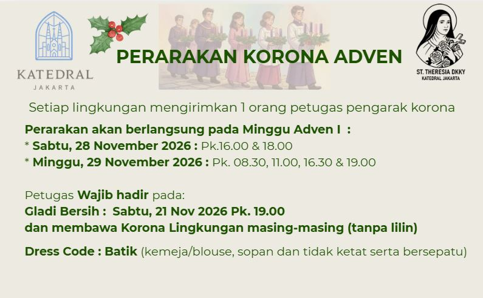
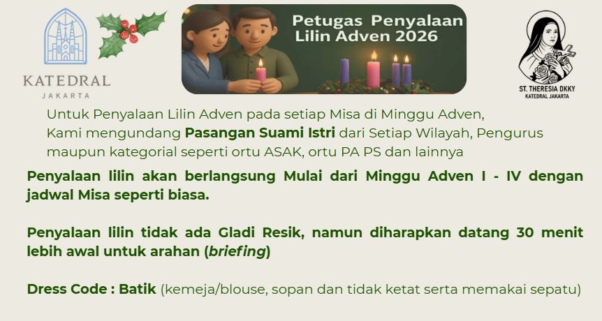

Panitia Natal 2026 - Katedral Jakarta
Wil. Theresia dari Kanak-Kanak Yesus
ADVEN
NATAL
Sosialisasi Bulan Keluarga
▾
Perarakan Korona Adven
▾

Penyala Lilin Korona Adven
▾

Jadwal Misa Natal
→
Doa Kapur Epifani
↗
×